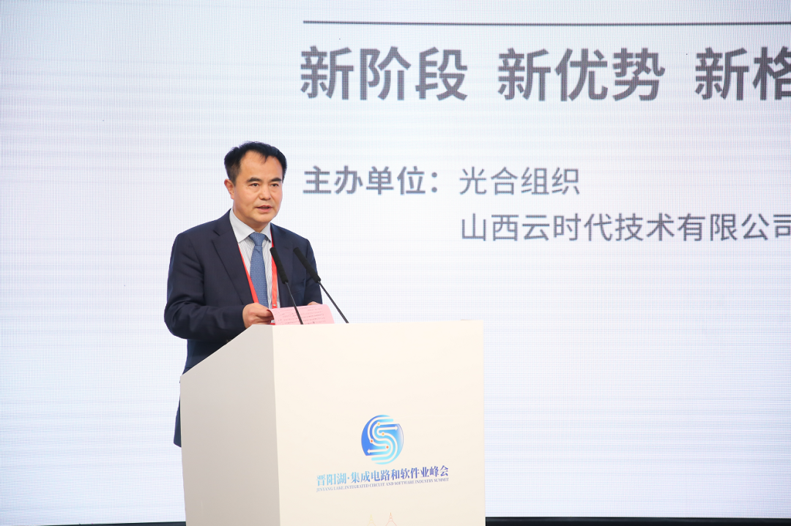
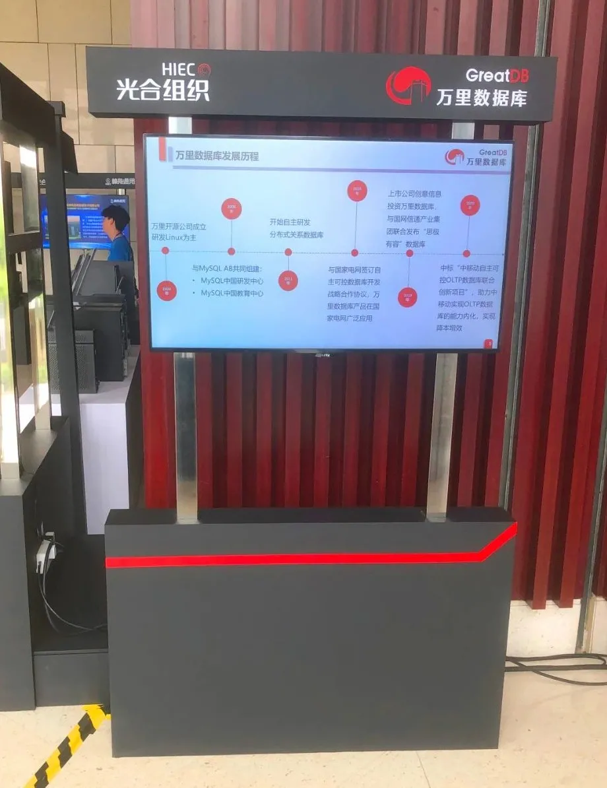

展会 | 万里数据库亮相2021光合组织春季领导人峰会 抢抓信创产业发展机遇
在世界“百年未有之大变局”的当口，在科技创新驱动引领高质量发展的当下，中国正在进入以信息产业为主导的经济发展时期。信息技术应用创新产业作为拉动经济发展的重要抓手之一，迎来了加速发展的新阶段。
新阶段 新优势 新格局
2021年5月11日 ，以 “新阶段 新优势 新格局” 为主题的晋阳湖·第二届集成电路和软件业峰会暨2021光合组织春季领导人峰会在山西太原圆满落幕。本次会议硕果累累：光合组织山西分会揭牌成立；光合组织战略合作伙伴签约；为2020年优秀合作伙伴颁发奖励。
山西省委委员、常委、副书记蓝佛安，山西省副省长，省政府党组成员贺天才，山西省政府副秘书长王文禹，山西省政府副厅长、示范区党委书记、管委会主任李晋平等政府领导及相关部门，整机厂商、软件厂商、行业用户、合作伙伴高级别领导共计近400人参加了会议。
李晋平表示，当前新一代信息技术产业加速发展，信息技术和应用正处于创新突破的重要时刻。山西省要抢抓良好机遇，与各届合作伙伴联动，加快形成区域信息产业发展的浓厚氛围和良好态势。

山西省政府副厅长、示范区党委书记、管委会主任李晋平发表讲话
硕果累累，光合同行
万里数据库作为信创领域的知名数据库企业，同时也是光合组织的重要合作伙伴，受邀参与本次产品和解决方案的展示，为光合组织打造完善的上下游产业生态提供专业的分布式数据库技术产品和解决方案能力。

万里数据库专注数据库研发20余年，公司研发的新一代分布式数据库经过十余年的市场验证，在功能、性能、稳定性、易用性等方面均处于行业领先水平，历经500多个业务场景的锤炼，目前广泛应用于金融、运营商、能源、政府、互联网等多个行业领域。
万里数据库一直在逐步完善国产软硬件产业链生态，与合作伙伴共建信创生态圈，目前已与国内主流服务器、操作系统、芯片厂商完成适配，在基础软硬件生态产业链上越来越完善，旨在与更多优秀的合作伙伴实现互利共赢，释放生态潜能，满足更广泛的信息技术应用创新需求。
产业布局，协同共进
在新阶段要求下，万里数据库将持续优化产业布局，构建产业生态，增强技术供给，加快技术应用，致力于与合作伙伴打造协同共进的产业发展环境，为信创生态的发展、壮大及走向繁荣提供坚实、可靠的技术支撑。
推荐阅读1.热点 | 聚焦两会科技创新 万里数据库交出“数据库创新产品奖”完美答卷
2. 要闻 | 万里数据库荣膺2020年度数据库创新产品奖
3. 再获肯定 | 万里数据库入选《2020年度中国信创TOP500》

扫码二维码
关注公众号